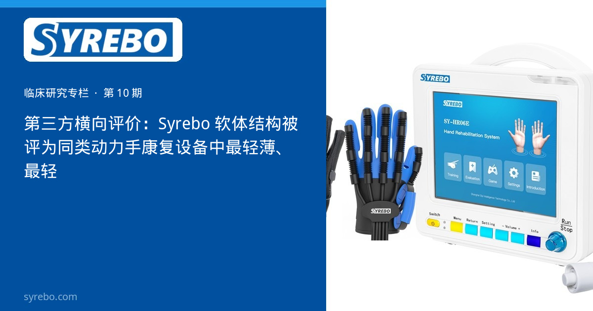

Syrebo 临床研究专栏
循证 · 康复机器人手套临床研究解读
文献摘录
Design, modeling, and preliminary evaluation of a 3D-printed wrist-hand grasping orthosis for stroke survivors
Ledoux ED, Barth EJ
Wearable Technologies, 2024; 5: e12
DOI: 10.1017/wtc.2024.18 · PMID: 39575325 · PMC11579884



2024 年剑桥大学出版社的《Wearable Technologies》发表了范德堡大学 Ledoux 与 Barth 的一篇设计论文：作者制作的是他们自己的 3D 打印腕手抓握矫形器，并做了初步评价。论文在讨论可穿戴手部装置时提到了商用软体结构。本专栏不把这种讨论改写成产品之间的名次，也不把它当作 Syrebo 的疗效证据。
手部装置要离开治疗室，首先面对的是重量、轮廓和患者能否自己穿脱。设计论文通常先写约束条件，再写样机，而不是先报告一份多中心的功能试验。把设计论文读成疗效论文，会把尚未测量的临床结局说成已经测量。
软体路线和刚性外骨骼回答的工程问题不同。前者把材料的柔性当作减少轮廓的办法。这是设计选择，需要单独的人体试验才能谈论功能变化。
文首文献摘录是该开放获取论文的首页题录（CC BY 4.0），不是结果对照表。专栏产品图只说明 Syrebo 临床手套系统的外观，不表示该图来自这篇论文的试验。
研究设计
设计、建模与初步评价。对象是作者自己的 3D 打印腕手抓握矫形器。论文不是针对 Syrebo 的随机对照，也不是上市产品之间的疗效比较。
样本与周期
论文的人体部分是对样机的初步评价，规模和任务都以原文为准。本专栏不把这一样本复述成 Syrebo 的临床队列。
核心结果
本页不摘录论文里的商业产品形容词，也不排列其他品牌。可以保留的信息只有：这是一项开放获取的设计研究，作者在讨论软体、可穿戴结构；其中的推测性用语（原文 presumably）说明作者自己没有把舒适度写成已测量的终点。
把它收进专栏，是为了把“设计论文”和“疗效试验”分开。软体结构是否让设备更接近日常佩戴，仍然要由佩戴试验和功能试验分别回答。
开放获取使读者可以直接核对原文用词。核对的目的是避免把推测句写成结论，而不是为了选出一个最轻的产品。
研究边界 不是 Syrebo 的疗效试验，也不作产品间排名。原文对舒适度使用了推测限定。首页截图不包含对照表。